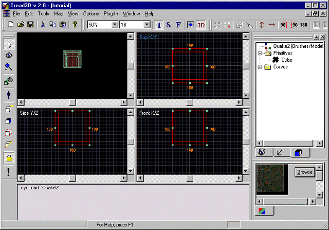
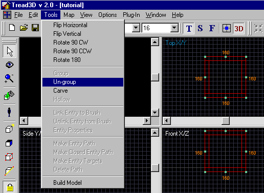
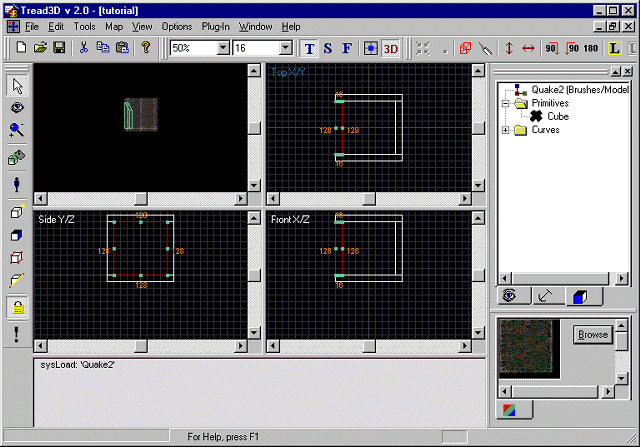
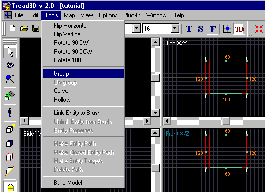

This is a walk-through as to how to group and ungroup brushes.
Before starting this tutorial you should first get acquainted with the basics of the "Tread3D" editor; the screen and the various commands that are available.
As in the "MAKING A BRUSH", "SAVING YOUR WORK" or "HOLLOWING A BRUSH" tutorials start "Tread3D" and make a very basic hollowed brush (A room); or just open your saved file called "tutorial".
Your screen should look like the one below.

You will notice that what you have is a basic room with four walls, a ceiling and a floor.
Also, if you point and click on any part of the room all the parts become highlighted. This is because all the parts were initially grouped when you hollowed out the brush.
Now, use the pointer and click anywhere on the hollowed brush.
The room should now be highlighted.
Click on the "Tools" menu and scroll down to "Un-group".

In addition to using the "Drop down menu" you could have used the "Ungroup" button.

Now once you have selected "ungroup". (Remember the brush must be highlighted)
Just click outside the selected hollowed brush.
The hollowed brush is no longer grouped and when you point and click on an area just one of the six components will be highlighted.
In this example we have clicked on the wall to the left and you will notice that just the one wall is now highlighted.
Your screen should look like the one below.

Thats all there is to it.
What you have done is ungrouped a group of brushes.
Now lets "group" two walls together.
First point and click one wall. In this case we will highlight the left wall.
Now hold down the "Ctrl" key on your keyboard and point and click on the right wall.
You will now notice that both wall are highlighted.
Click on the "Tools" menu and scroll down to "Group".

In addition to using the "Drop down menu" you could have used the "Group" button.

Now once you have selected "group". (Remember the brushes must be highlighted)
Just click outside the selected hollowed brush.
The two walls are now grouped and when you point and click on the left or right wall both become highlighted.
What you have done is grouped a set of brushes.
Thats all there is to it.
Now resave your work.